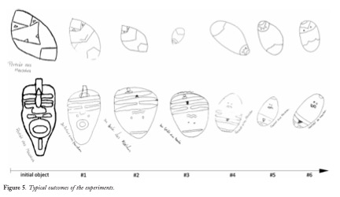
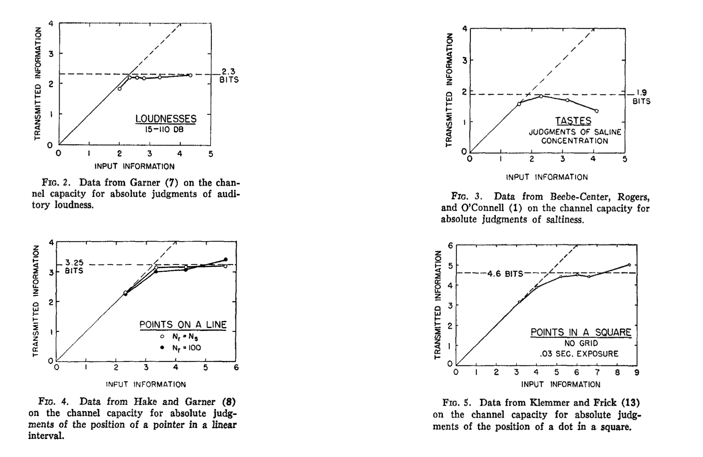

PSYC 2530: Memory I
Early approaches
Matthew J. C. Crump
Last compiled 03/29/22
Reminders
Reading is Chapter 8 on Memory I
Roadmap
3 Memory as information processing
Questions about memory
What is it like for you to remember something from your past?
How many events from your experience can you remember?
Why can you remember something from years ago, but forget new information from seconds ago?
How do you preserve your experiences so that they can be remembered later on?
Why is it sometimes hard to remember something, but later the answer pops in your head?
How can you improve your memory?
How can you forget things you don’t want to think about?
What other animals besides humans have memories?
How are memories encoded, stored, and retrieved in the brain?
How do people use their environment to help them remember things?
Roadmap
3 Memory as information processing
Early memory researchers
Hermann Ebbinghaus
Sir Frederick Bartlett
Bluma Zeigarnik
Hedwig von Restorff
Hermann Ebbinghaus (1850-1909)
What did Ebbinghaus do?
Systematically measured rates of learning and forgetting
Conducted single-subject research on himself
Invented use of nonsense material (CVC syllables)
Big Questions
How do people learn new associations?
What happens to new learning with delays between practice? (forgetting)
Issues
People already have many existing associations from their experience…
How to study learning of new associations?
Methodological insight
Adopt a task with very little pre-existing familiarity
Ebbinghaus devised a serial learning task to measure how long it took to recite of a list of items from memory.
He used artificial stimuli so that pre-existing familiarity with the items would not interfere with the learning process.
Ebbinghaus’s task
Ebbinghaus’ task involved learning lists of nonsense syllables
Two basic phases:
Learning phase
Re-learning after a delay
Modern Replication
Murre, J. M. J., & Dros, J. (2015). Replication and Analysis of Ebbinghaus’ Forgetting Curve. PLOS ONE, 10(7), e0120644. https://doi.org/f7vfcn
one-time perfect
Learning phase: practice reciting a row until it is recited perfectly one time, then move to next row
Re-learning after delay
In the second phase, each row was re-learned after a delay. The delays were 20 minutes, 1 hour, 9 hours, or 1, 2, 6, or 31 days.
After each delay period, rows were shown again and relearned.
The number of relearning attempts to get to another “one-time perfect” recitation was also measured.
Original learning
How many practice attempts were necessary to memory a row of nonsense syllables?
The blue line shows that an average of 30-32 practice attempts were needed to memorize each row

Data from Murre & Dros, 2015
Savings in Re-learning
How many attempts were required to re-learn a list after different delays?
The delays were 20 minutes, 1 hour, 9 hours, or 1, 2, 6, or 31 days.
Results

Exponential forgetting
Ebbinghaus was the first show evidence for exponential forgetting across delays
Most forgetting occurred immediately after learning, and the rate of forgetting slowed down as delay increased
“Exponential forgetting is like going to Las Vegas and spending most of your money on the first day, and then losing the rest of it slowly over the next week.”
Sir Frederick Bartlett (1886-1969)
British Psychologist
Published book “Remembering” in 1932
Reconstructionist view of memory
Memory as “RE-” Membering
Memory is “Humpty-Dumpty”
Memory as a process of re-constructing, or actively putting back together
Big questions
How do people reconstruct a prior memory?
How does memory change over successive re-memberings?
Method of Serial Reproduction
Bartlett conducted experiments that involves two general phases:
Encoding/learning of some information
Reproduction phases: Had people reproduce the information from memory, many times over
Bartlett’s Schemas
Bartlett suggested that remembering processes are guided by general schemas
People may distort their original experiences toward a schema
Reproducing Bartlett
Carbon, C.-C., & Albrecht, S. (2012). Bartlett’s schema theory: The unreplicated “portrait d’homme” series from 1932. Quarterly Journal of Experimental Psychology, 65(11), 2258–2270. https://doi.org/gjs5bh

Memory distortions
Although some of Bartlett’s findings may not stand the test of time, there are many reproducible findings showing that memory can be distorted in interesting ways.
So, even though memory reconstruction may not always head toward a schema, memory does appear to involve some kind of constructive process capable of returning accurate and distorted impressions of past experiences.
Bluma Zeigarnik (1901-1988)
Early memory researcher
“to-do” list effect
Phenomenon
Zeigarnik investigated an apparent phenomenon showing that uncompleted tasks are remembered better than completed tasks
Method
Participants were given a variety of tasks that took about 3- 5 minutes to complete (math, drawing, threading a needle).
Manipulation:
Partway through some of the tasks, she interrupted people and asked them to start on a new task.
At the end of the experiment, the participants had completed some of the tasks, and others remained incomplete.
Results
Zeigarnik then had participants recall all of the tasks.
Across several experiments she reliably found that people recalled more of the uncompleted tasks than the completed tasks.
One explanation was the goal to a complete a task created psychological tension that could only be resolved by completing the task. This goal-based tension is not resolved when a task is interrupted, and leads to differences in memory completed and uncompleted tasks.
Replication attempts
In 1968, Van Bergen published several replication attempts and found that her participants did not show systematic differences in their memory for completed and uncompleted tasks…
Hedwig von Restorff (1906-1962)
Applied Gestalt theory figure/ground concepts to memory
Demonstrated role of distinctiveness in memory
Big Questions
What makes some information more memorable than others?
Is memory better for things that “stand-out” from the background?
Method
Tested recall memory for lists of paired items.
Manipulated:
“massed” items (CVC syllables) vs
“isolated” items (unique pairs)
Counterbalancing
Counterbalancing is an experimental technique used to control for the role of individual stimuli
Von Restorff counterbalanced the massed and isolated items across lists
Results
Von Restorff found:
Higher recall of isolated pairs compared to massed pairs…
Regardless of type of material
Important: particular stimuli were more or less memorable, not in and of themselves, but in relation to how distinct they were from other stimuli in the set.
Distinctiveness effects
..have been replicated many times in many ways since von Restorff
Roadmap
3 Memory as information processing
George Miller (1920-2012)
Often considered a “founder” of cognitive psychology
Did early work on information processing limitations
Later work on language
Miller’s Magic Number 7
Reviews evidence showing that absolute magnitude judgments in perception have similar information “channel” capacities
Considers whether perceptual processing limitations apply to immediate memory
Miller’s Big Question
Are the information channels for perception and memory limited in the same way or different ways?
Absolute Perceptual Judgment
A method from psychophysics
People are presented with one stimulus at a time from a set of stimuli
Task is to identify (by name or label) the stimulus
Absolute Pitch
Absolute pitch is a rare musical ability to identify or name individual pitches played on a musical instrument without a reference tone
Most people are not able to name specific pitches
Pollacks’ pitch judgment results
Pollack presented people with sets of tones (from 2 to 14 different tones)
Subjects had identify the specific tone presented with a number
Pollack, I. (1952). The Information of Elementary Auditory Displays. The Journal of the Acoustical Society of America, 24, 745–749.
Translation to Channel Capacity
Results from absolute magnitude judgment tasks can be translated from accuracy to amount of information transmitted
Generalization across perceptual tasks

Interim summary
Judgments of absolute magnitude appear to be limited by stimulus set-size, which could be translated to amount of information
Performance was typically near perfect up to around set size of 7, plus or minus 2.
How items can memory hold?
Immediate memory span is a way to measure the ability to encode and recall an arbitrary list of items over a short period of time
People can often retain around 7, plus or minus two items
Recoding and Chunking
Miller suggests that people “recode” information into chunks, and that immediate memory is limited by number of chunks not amount of information in the chunks
Roadmap
3 Memory as information processing
Short vs long-term memory
We have all forgotten something that just happened
We can all remember things from a long time ago
How do we explain the short and long term aspects of memory ability?
Multi-store model
Atkinson, R. C., & Shiffrin, R. M. (1968). Human memory: A proposed system and its control processes. In Psychology of learning and motivation (Vol. 2, pp. 89–195). Elsevier.
Rehearsal buffer
According to the multi-store model, people can consciously rehearse items in a short term buffer
More rehearsal = more transfer to long-term memory
Free recall task
A common memory task procedure
Encoding phase: read a list of words
Recall phase: write down all the words you can recall on a blank sheet of paper
Serial position curve
A common finding in free recall tasks
Primacy effect: better memory for items presented early in the list
Recency effect: better memory for items presented at the end of the list

Deese, J., & Kaufman, R. A. (1957). Serial effects in recall of unorganized and sequentially organized verbal material. Journal of Experimental Psychology, 54(3), 180. https://doi.org/drc265
Explaining the serial position curve
How does the multi-store model explain the primacy effect?
How does the multi-store model explain the recency effect?
Testing the rehearsal account
How could we test the hypothesis that the rehearsal is causing the recency effect?
Manipulating Rehearsal
Postman & Philips (1965) manipulated whether or not participants did arithmetic problems before a recall test…
Arithmetic problem-solving should make rehearsal difficult
Tzeng 1973
In 1973, Tzeng reported a standard free-recall experiment with a twist.
His subjects were given four lists of 10 words each. The twist was that after hearing each word, subjects spent 20 seconds counting backwards by 3s from a random starting digit.
Counting backwards by 3s was a very demanding task that should occupy and replace the contents of any short-term rehearsal buffer.
Long-term recency
According to the multi-store model, Tzeng should not have found recency effects in this experiment, but he did.
What’s next?
Take the quiz and complete any assignments for the learning module by the due date.
The next learning module is Memory II.